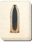

Requires
- Arts: 
Enables
- Arts:

Effects
- Enables Armour-piercing Shells
Description
At the water's edge
The cold snow washed away
To reveal nothing.
In the modern world arguments are not settled face to face with honest swordsmanship or cunning debate. Instead, the cannons speak, and all words are drowned by the crash and bright terror they bring. A stout-hearted, a weather eye and a ready tongue avail a sailor nothing when even the fish die of despair.